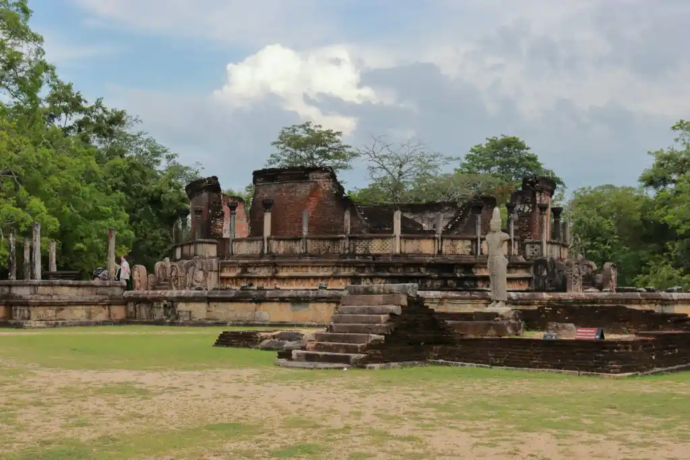
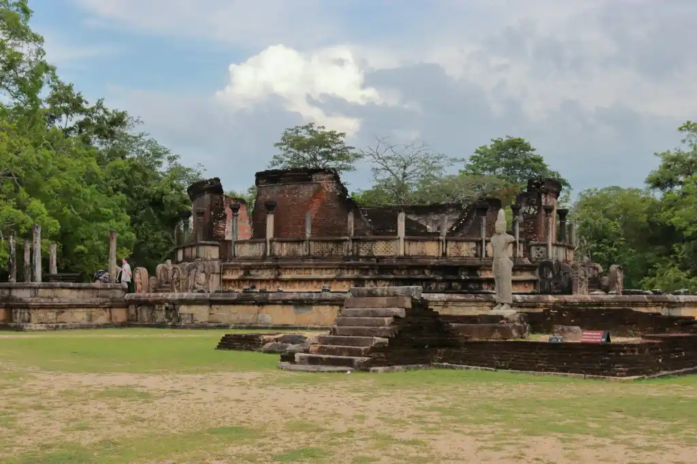

A land of myth, legd, history and one of the richest cudnwes, Sri Lanka is of the host travel demitations and hures arms of all kinds. Perhaps you're loves the sole of sand steady walks through wails. Maybe you love relating by the aes with the ing your face and a cool berean caressing your sku. O ty beat might you core and a litle game of chance ca whatever your thrill with de beat tourut places to visit in Sri Lanks, this land sam hes it all.
Ravana's Lanka has a long history and over 2,000 years of written record. It's been moned in the epics Ramananaya Mahabharata too. Over the years, Lasked by the Portugune, Duch and the Brnish and this colonization is evident from the colonial archimerare, Catholicam, ramanes and vocabulary that you'll as your visit here
Tickle you taste buds with local favorites like rich cunes, fragrant poles and the old sling wood apple Excited yet? You should be! With the best art places Lach diversity and culture, there really is no place quite like Sri Lanka. If you're mill wondering if this is the destination head to read in and you'll find yourself convinced.
 

| Name of District | Name of Province | Land area |
|---|---|---|
| Jaffna | Northern | 1,576km2 |
| Kalutara | Western | 929km2 |
| Kandy | Central | 1,917km2 |
| Kegalle | Sabaragamuwa | 1,685km2 |